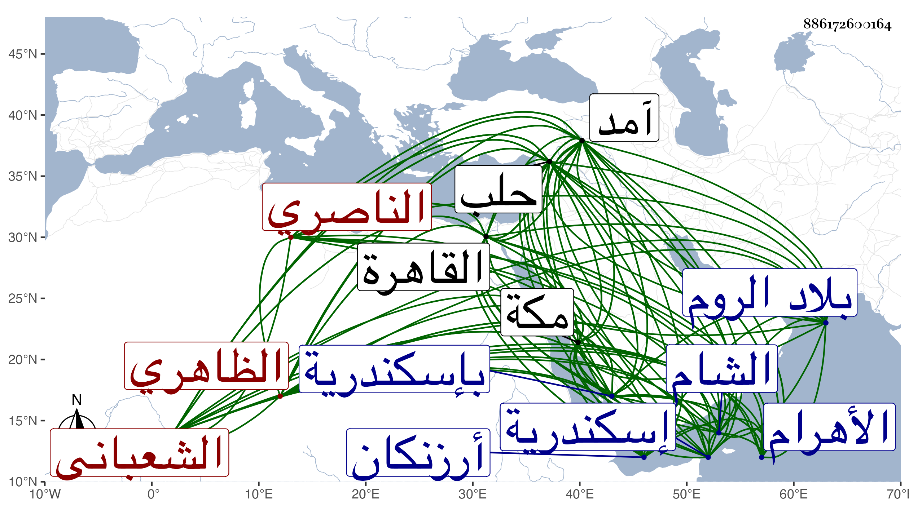

0902Sakhawi.DawLamic.ITO20230111-ara1.EIS1600.886172600164
Biography ID: 886172600164
729
قرقماس الشعباني الظاهري برقوق ثم الناصري ويعرف بقرقماس أهرام ضاغ يعني جبل الأهرام لتكبره . أصله من كتابية الظاهر ثم ملكه ابنه فأعتقه وعمله خاصكيا ثم صار في دولة المؤيد من الدوادارية الصغار ثم تأمر بعده عشرة ثم دوادارا ثانيا مع إمرة طبلخاناه ، ودام إلى سنة ست وعشرين فأنعم عليه بتقدمة وتوجه لمكة مع علي بن عنان كالشريك له في إمرتها وأقام بها نحو سنة تخمينا ، وطلب إلى القاهرة على إمرته إلى أن خلع عليه في منتصف شوال سنة تسع وعشرين بالحجوبية الكبرى فباشرها بحرمة زائدة وعظمة وبطش في الناس بحيث هابه كل أحد وسافر مع السلطان إلى آمد فلما رجع وذلك في سنة سبع وثلاثين استقر به في نيابة حلب بعد قصروه المنتقل لنيابة الشام فباشرها على عادته ثم صرف حين ظهر جانبك الصوفي من الروم وقدم القاهرة مسرعا على النجب في سنة تسع وثلاثين على أقطاع جقمق العلائي ووظيفته إمرة سلاح إلى أن تجرد في جماعة أمراء إلى أرزنكان سنة إحدى وأربعين فكان حضورهم بالطلب حين ترشح جقمق للسلطنة فقام معه حتى تسلطن ذاك وعمل هذا عوضه أتابكا فلم يلبث إلا أياما ووثب عليه وكان ما شرح في الحوادث ، وآل أمره إلى أن جرح في وجهه بالنشاب وفر عنه غالب أصحابه ثم انهزم واختفى من يوم الأربعاء رابع ربيع الآخر سنة اثنتين وأربعين ولم يلبث أن قبض عليه في يوم الجمعة سادسه ثم قيد وجهز إلى إسكندرية من الغد فحبس بها إلى خامس رجب وعقد له مجلس بالقصر وأقيمت البينة عند القاضي المالكي على منصوب عن قرقماس هو الشهاب بن يعقوب نقيب شيخنا بحكم غيبته بإسكندرية بخروجه على السلطان بعد مبايعته وخلفه له وإشهاره السلاح فحكم بموجب الشهادة فقيل له : فما يجب عليه قال : يتخير السلطان في ذلك فجهز بريدي بأن يقرأ عليه المحضر ويعذر له فيه فقرئ عليه وأمر بقتله بسيف الشرع فضربت عنقه وذلك بإسكندرية في يوم الاثنين ثاني عشره وهو ابن نيف وخمسين سنة وكان أميرا ضخما متعاظما متكبرا ظالما مع تدبير ومكر وشجاعة وإقدام وكونه يتفقه ويتحفظ بعض المسائل ويظهر التدين ولتكبره وتعاظمه وعدم بشاشته سر العامة بإمساكه وإتلافه ، وقد أشار شيخنا لترجمته في حوادث رجب وغيرها من أنبائه ، وقال في ترجمة جارقطلي من سنة سبع وثلاثين منه : ومن الاتفاق الغريب أن رفيقا لي رأى لما كنا في سفرة آمد قبل أن ندخل حلب وذلك في رمضان أن الناس اجتمعوا فطلبوا من يؤم بهم فرأوا رجلا ينسب إلى صلاح فسألوه أن يؤم بهم فقال : بل يؤم بكم قرقماس ففي الحال حضر قرقماس فتقدم فصلى بهم فقدرت ولايته لها بعد بدون سنة ، وقد ترجمه ابن خطيب الناصرية وغيره .
